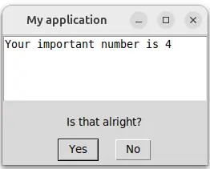

Mininterface – access to GUI, TUI, web, CLI and config files

Write the program core, do not bother with the input/output.


Check out the code, which is surprisingly short, that displays such a window or its textual fallback.
from dataclasses import dataclass
from mininterface import run
@dataclass
class Env:
""" This calculates something. """
my_flag: bool = False
""" This switches the functionality """
my_number: int = 4
""" This number is very important """
if __name__ == "__main__":
m = run(Env, title="My application")
m.form()
# Attributes are suggested by the IDE
# along with the hint text 'This number is very important'.
print(m.env.my_number)Contents
- You got CLI
- You got config file management
- You got dialogs
- Background
- Installation
- Docs
- Gallery
- Examples
You got CLI
It was all the code you need. No lengthy blocks of code imposed by an external dependency. Besides the GUI/TUI/web, you receive powerful YAML-configurable CLI parsing.
$ ./program.py --help
usage: program.py [-h] [-v] [--my-flag | --no-my-flag] [--my-number INT]
This calculates something.
╭─ options ───────────────────────────────────────────────────────────────╮
│ -h, --help show this help message and exit │
│ -v, --verbose Verbosity level. Can be used twice to increase. │
│ --my-flag, --no-my-flag │
│ This switches the functionality (default: False) │
│ --my-number INT This number is very important (default: 4) │
╰─────────────────────────────────────────────────────────────────────────╯You got config file management
Loading config file is a piece of cake. Alongside program.py, write some of its arguments to program.yaml. They are seamlessly taken as defaults.
my_number: 555$ program.py --help
...
│ --my-number INT This number is very important (default: 555) │You got dialogs
Check out several useful methods to handle user dialogs. Here we bound the interface to a with statement that redirects stdout directly to the window.
with run(Env) as m:
print(f"Your important number is {m.env.my_number}")
boolean = m.confirm("Is that alright?")

Background
Wrapper between various libraries that provide a user interface.
It allows you to focus on writing the program's core logic without worrying about input/output. It generates CLI arguments, parses config file, and shows a UI. Depending on the endpoint, the dialogs automatically use either a GUI, a mouse-clickable TUI, a lightweight terminal text interface, or be available via HTTP — all while maintaining exactly the same functionality.
Writing a small and useful program might be a task that takes fifteen minutes. Adding a CLI to specify the parameters is not so much overhead. But building a simple GUI around it? HOURS! Hours spent on researching GUI libraries, wondering why the Python desktop app ecosystem lags so far behind the web world. All you need is a few input fields validated through a clickable window... You do not deserve to add hundred of lines of the code just to define some editable fields. Mininterface is here to help.
The config variables needed by your program are kept in cozy dataclasses. Write less! The syntax of tyro does not require any overhead (as its argparse alternatives do). You just annotate a class attribute, append a simple docstring and get a fully functional application:
- Call it as
program.py --helpto display full help. - Use any flag in CLI:
program.py --my-flagcausesenv.my_flagbe set toTrue. - The main benefit: Launch it without parameters as
program.pyto get a fully working window with all the flags ready to be edited. - Running on a remote machine? Automatic regression to the text interface.
- Or access your program via web browser.
Installation
Install with a single command from PyPi.
pip install "mininterface[all]<2" # GPLv3 and compatibleBundles
There are various bundles. We mark the least permissive licence in the bundle.
| bundle | size | licence | description |
|---|---|---|---|
| mininterface | 1 MB | LGPL | minimal – only text dialogs |
| mininterface[basic] | 25 MB | LGPL | CLI, GUI, TUI |
| mininterface[web] | 40 MB | LGPL | including WebInterface |
| mininterface[img] | 40 MB | LGPL | images |
| mininterface[tui] | 40 MB | LGPL | images |
| mininterface[gui] | 70 MB | GPL | images, combobox, calendar |
| mininterface[ui] | 90 MB | GPL | full installation |
| mininterface[all] | 90 MB | GPL | full installation, same as ui, reserved for future use (big dependencies, optional interfaces) |
Apart from the minimal bundle (which lacks CLI and dataclass support), they have the same functionality, differring only in the user experience.
Tip
For automated testing (e.g., in CI environments), the mininterface[basic] bundle is sufficient.
MacOS GUI
If the GUI does not work on MacOS, you might need to launch: brew install python-tk
Docs
See the docs overview at https://cz-nic.github.io/mininterface/.
Gallery
These projects have the code base reduced thanks to the mininterface:
- deduplidog – Find duplicates in a scattered directory structure
- touch-timestamp – A powerful dialog to change the files' timestamp
Examples
Hello world
Take a look at the following example.
- We define any Env class.
- Then, we initialize mininterface with [
run(Env)][mininterface.run] – the missing fields will be prompted for - Then, we use various dialog methods, like [
confirm][mininterface.Mininterface.confirm], [select][mininterface.Mininterface.select] or [form][mininterface.Mininterface.form].
Below, you find the screenshots how the program looks in various environments (graphic interface, web interface...).
from dataclasses import dataclass
from pathlib import Path
from mininterface import run
@dataclass
class Env:
my_file: Path # This is my help text
my_flag: bool = False
my_number: int = 4
if __name__ == "__main__":
# Here, the user will be prompted
# for missing parameters (`my_file`) automatically
with run(Env) as m:
# You can lean on the typing
# Ex. directly read from the file object:
print("The file contents:", m.env.my_file.read_text())
# You can use various dialog methods,
# like `confirm` for bool
if m.confirm("Do you want to continue?"):
# or `select` for choosing a value
fruit = m.select(("apple", "banana", "sirup"), "Choose a fruit")
if fruit == "apple":
# or `form` for an arbitrary values
m.form({
"How many": 0,
"Choose another file": m.env.my_file
})Launch with ./program.py:


Or at the remote machine MININTERFACE_INTERFACE=tui ./program.py:


Or via the plain text MININTERFACE_INTERFACE=text ./program.py:

Or via web browser MININTERFACE_INTERFACE=web ./program.py:

You can always set Env via CLI or a config file:
$ ./program.py --help
usage: program.py [-h] [OPTIONS]
╭─ options ──────────────────────────────────────────────────────────────╮
│ -h, --help show this help message and exit │
│ -v, --verbose Verbosity level. Can be used twice to increase. │
│ --my-file PATH This is my help text (required) │
│ --my-flag, --no-my-flag │
│ (default: False) │
│ --my-number INT (default: 4) │
╰────────────────────────────────────────────────────────────────────────╯Goodbye argparse world
You want to try out the Mininterface with your current ArgumentParser?
You're using positional arguments, subparsers, types in the ArgumentParser... Mininterface will give you immediate benefit. Just wrap it inside the [run][mininterface.run] method.
#!/usr/bin/env python3
from argparse import ArgumentParser
from datetime import time
from pathlib import Path
from mininterface import run
parser = ArgumentParser()
subparsers = parser.add_subparsers(dest="command", required=True)
sub1 = subparsers.add_parser("build", help="Build something.")
sub1.add_argument("--optimize", action="store_true", help="Enable optimizations.")
parser.add_argument("input_file", type=Path, help="Path to the input file.")
parser.add_argument("--time", type=time, help="Given time")
# Old version
# env = parser.parse_args()
# env.input_file # a Path object
# New version
m = run(parser)
m.env.input_file # a Path object
# Live edit of the fields
m.form()Now, the help text looks much better. Try it in the terminal to see the colours.
$ ./program.py --help
usage: program.py [-h] [OPTIONS] PATH
╭─ positional arguments ──────────────────────────────────────────────────╮
│ PATH Path to the input file. (required) │
╰─────────────────────────────────────────────────────────────────────────╯
╭─ options ───────────────────────────────────────────────────────────────╮
│ -h, --help show this help message and exit │
│ -v, --verbose Verbosity level. Can be used twice to increase. │
│ --time HH:MM[:SS[…]] Given time (default: 00:00:00) │
╰─────────────────────────────────────────────────────────────────────────╯
╭─ build options ─────────────────────────────────────────────────────────╮
│ --build.optimize, --build.no-optimize │
│ Enable optimizations. (default: False) │
╰─────────────────────────────────────────────────────────────────────────╯And what happens when you launch the program? First, Mininterface asks you to provide the missing required arguments. Note the button to raise a file picker dialog.

Then, a .form() call will create a dialog with all the fields.

You will access the arguments through [m.env][mininterface.Mininterface.env]
print(m.env.time) # -> 14:21If you're sure enough to start using Mininterface, convert the argparse into a dataclass. Then, the IDE will auto-complete the hints as you type.
Warning
The argparse support is considered mostly for your evaluation as there are some differences for advanced argparse CLI interfaces.